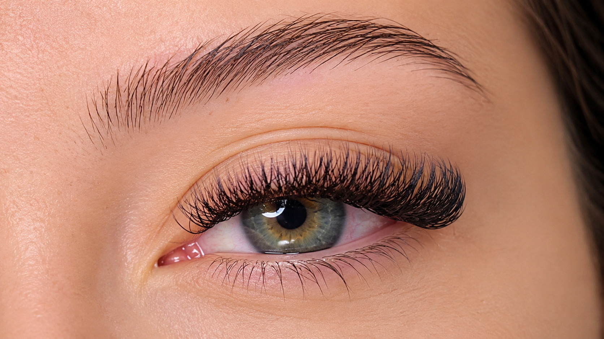
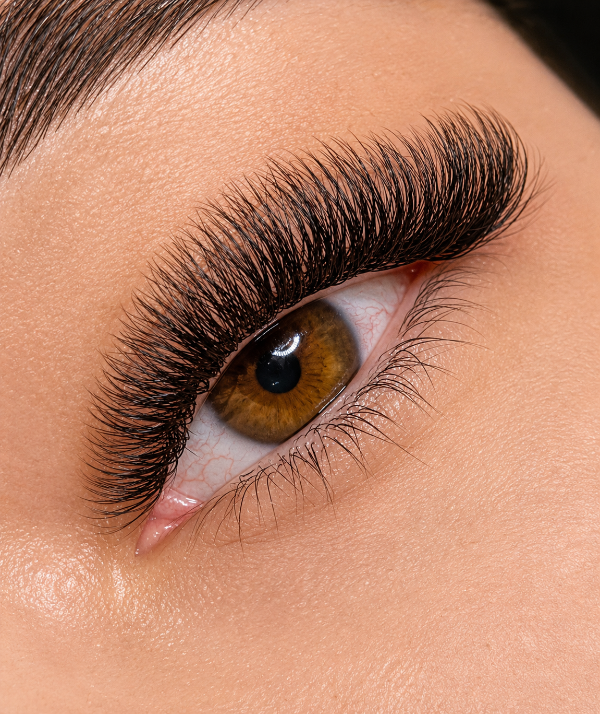

Atendimento personalizado
Um olhar atento às suas preferências e ao resultado que deseja.


Realçamos sua beleza com técnicas personalizadas, cuidado em cada detalhe e uma experiência pensada especialmente para você.
Mais do que um procedimento, queremos proporcionar uma experiência de conforto, atenção e autoestima.
Um olhar atento às suas preferências e ao resultado que deseja.
Um ambiente acolhedor para você aproveitar seu momento.
Procedimentos escolhidos para valorizar sua beleza natural.
Encontre a técnica que combina com você e descubra seu próximo momento D’Ferrer.


Feito com os seus próprios cílios naturais. Ajuda a alongar e curvar os cílios. A manutenção é feita em 30 dias.
Agendar on-line
Técnica natural e leve, como se você tivesse passado várias camadas de rímel. Indicada para quem ama um olhar bem natural.
Agendar on-line
Feito com 5 fios superfinos aplicados juntos para criar um visual de “acabei de sair do banho”.
Agendar on-lineCílios supernaturais: utiliza o mesmo fio da técnica do Volume Brasileiro, porém com preenchimento de apenas 50% dos fios naturais. Leva cerca de 1 hora para ser feito.
Agendar on-line
Mais volumoso que a técnica do Express Brasileiro. É preenchido em apenas 50% das extensões e leva cerca de 1 hora para ser feito.
Agendar on-line
Novidade 2024: o efeito Sirena traz leveza para o olhar. É superleve e fica perfeito para quem ama o modelo Fox. Tempo de procedimento: 1 hora.
Agendar on-line
O queridinho das nossas clientes! Traz volume e leveza ao olhar por conta dos cílios utilizados. Você pode escolher entre fios pretos ou marrons.
Agendar on-lineTécnica exclusiva D’Ferrer, perfeita para quem busca elegância e naturalidade. Trazida pela Angélica.
Agendar on-lineFeito com cílios 3D ou 4D, dependendo da quantidade de volume que você deseja. Pode ser personalizado ao seu gosto.
Agendar on-line
Olhar lindo e super sedutor! Esse efeito traz um delineado para o olhar e é ideal para quem ama um efeito mais puxadinho, estilo gatinho.
Agendar on-lineEssa técnica traz volume para os cílios e seu charme fica por conta dos famosos “spikes”: fios maiores que dão todo o charme dessa técnica.
Agendar on-lineFeito com fio tecnológico 5D, traz um volume leve e sofisticado. Para quem ama volume e não abre mão da naturalidade.
Agendar on-line
Para quem ama bastante volume, usamos um fio tecnológico com 6 pontas, dando mais volume ao olhar. Se você ama volume, essa técnica é ideal para você!
Agendar on-linePara quem ama um volumão e deseja uma retenção superior a 30 dias. Essa é a técnica número 1 do Studio e nossas clientes amam. Não possui manutenção.
Agendar on-lineSe você ama o efeito do fio a fio, mas gostaria que ele durasse mais, essa técnica é perfeita. Traz a sutileza do fio a fio com duração superior a 30 dias. Não possui manutenção.
Agendar on-lineEssa técnica possui um volume extremamente grande. Usamos 2 fios tecnológicos 4D, superlevinhos. É perfeita para quem ama um volume mais leve.
Agendar on-lineSe você já ama o Fox convencional, mas queria ainda mais volume, essa é a ideal para você. Tem o dobro do volume do Fox e duração superior a 30 dias. Não possui manutenção.
Agendar on-lineEssa técnica possui um volume extremamente grande. Usamos 2 fios tecnológicos 5D, que dão todo o charme e preenchimento para o olhar. É uma das técnicas mais cheias. Não possui manutenção.
Agendar on-lineNosso design é feito com a marcação da simetria das sobrancelhas com linha. Após a aprovação da cliente, os pelinhos são retirados com pinça. Depois, é feito um spa completo.
Agendar on-line
É feito todo o design com marcação em linha. Após a aprovação, os fios são retirados com pinça e é aplicada henna. Finalizado com um spa completo das sobrancelhas.
Agendar on-lineÉ feito todo o design com marcação em linha. Após a aprovação, os fios são retirados com pinça e é aplicada tintura. Finalizado com um spa completo das sobrancelhas.
Agendar on-line


Técnica que alinha e define as sobrancelhas, criando um efeito preenchido e natural. Depois, é aplicada tintura. O procedimento dura cerca de 1h30 e o resultado dura aproximadamente 30 dias.
Agendar on-lineTratamento que revitaliza e hidrata os lábios, suavizando linhas finas ao redor e eliminando o ressecamento, deixando-os mais macios e rejuvenescidos.
Agendar on-line
Acredito que a beleza vai muito além da estética: ela também é sobre confiança, autoestima e transformação.
Minha história com a beleza começou em 2020, durante a pandemia, em um pequeno espaço no quarto da casa dos meus pais. Deixei meu emprego para apostar em um sonho e construir um trabalho feito com propósito, dedicação e amor por cada detalhe.
Assim nasceu o Studio D’Ferrer Beauty. Com o tempo, aquele sonho cresceu e se tornou um espaço de cuidado, aprendizado e desenvolvimento profissional. Hoje, conto com uma equipe de seis profissionais que atende nossas clientes com dedicação e atenção a cada detalhe. Também compartilho conhecimento e incentivo outras mulheres a construírem sua própria trajetória na área da beleza.
Já tive a alegria de ensinar mais de 200 alunas presencialmente e mais de 500 no formato on-line, receber mais de 40 profissionais em minha trajetória no studio, desenvolver mais de seis técnicas próprias e reunir mais de 20 certificados nacionais e internacionais.
Será um prazer receber você.
Angélica FerreiraFundadora · Studio D’Ferrer Beauty
Conhecimento, prática e inspiração para construir sua trajetória na área da beleza.


A técnica abre a porta. Você constrói o caminho.
Uma formação presencial para aprender, praticar e desenvolver sua trajetória profissional na área da beleza.
Saiba mais sobre o curso presencialConheça o Lash Master Angel e descubra todos os detalhes da formação on-line.
Conhecer o curso on-lineCada mensagem representa uma história, uma experiência e a confiança que nos inspira todos os dias.
Depoimentos compartilhados por nossas clientes.